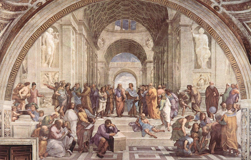
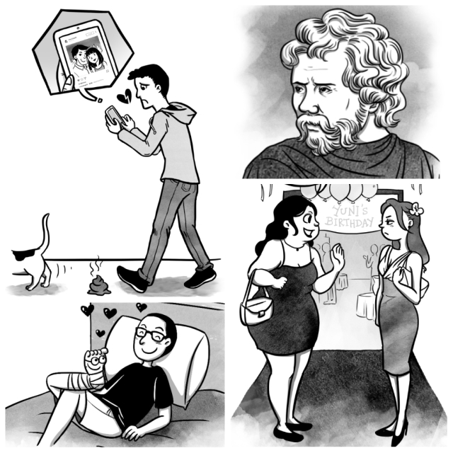

Stoikisme dan Pengaruhnya bagi Kehidupan
Ditulis oleh @dwiyulianti. Pada 31 Oktober 2023.
Filosofi stoikisme dapat membuat kamu lebih tenang dan bahagia dalam menjalani hidup. Apa saja yang bisa dilakukan untuk mewujudkannya dalam kehidupan sehari-hari?
Definisi Stoikisme
Apakah kamu pernah mendengar istilah “stoikisme”? Bagi sebagian orang, kata ini mungkin masih terasa asing. Stoikisme atau juga disebut stoa merupakan suatu aliran filsafat Yunani Kuno yang mulai dikenal pada awal abad ke-3 SM. Aliran stoikisme didirikan oleh Zeno dari Citium, seorang filsuf Yunani. Selain Zeno, filsuf lain yang terlibat adalah Kleanthes dari Assos dan Chrysippus dari Soli. Sebenarnya apa itu stoikisme dan apakah aliran filsafat tersebut masih relevan dan bermanfaat untuk dilakukan dalam kehidupan sehari-hari pada zaman sekarang? Apa saja hal yang dapat dilakukan sebagai bentuk penerapan stoikisme?
Pengertian Apa itu Stoikisme
Definisi stoikisme menurut kamus Oxford adalah daya tahan terhadap
rasa sakit atau kesulitan tanpa mengeluh. Sementara itu, dalam
Stanford Encyclopedia of Philosophy, “stoic” diambil dari kata “teras”
(stoa poikilê) dari bahasa Yunani. Disebut demikian karena pengikut
aliran ini berkumpul di tangga Agora di Athena, tempat berlangsungnya
kuliah stoikisme pada zaman itu. Fakta menarik lainnya, orang Yunani
kuno sering memberikan nama pada sekolah filsafat tergantung dari
tempat mereka bertemu.
Secara umum, stoikisme dipahami sebagai aliran filsafat yang
berpandangan bahwa manusia harus mampu mengontrol emosinya agar bisa
bersyukur atas apa yang terjadi. Dalam aliran stoikisme ditekankan
prinsip bahwa manusia merupakan makhluk yang mudah dipengaruhi emosi.
Karena kondisi itu, manusia sering melupakan hal positif yang
diterimanya.
Prinsip-Prinsip Stoikisme

Pembahasan tentang suatu aliran filsafat tidak akan jauh-jauh dari
pembahasan mengenai prinsip-prinsip yang terdapat di dalamnya. Ada
beberapa prinsip utama dalam stoikisme yang bisa kamu pelajari, yaitu:
1. Hidup Selaras dengan Alam
Jika kamu ingin menikmati kehidupan yang lancar, hiduplah selaras
dengan alam. Inilah inti dari ajaran stoikisme. Penganut aliran ini
meyakini bahwa alam semesta bersifat rasional.
Zeno mempercayai bahwa setiap manusia memiliki daimon yang membuatnya
terhubung dengan alam semesta. Mereka yang menjaga harmoni dengan alam
akan mengalami kebahagiaan, demikian pula sebaliknya.
2. Kebahagiaan dari Kebaikan
Penganut stoikisme percaya bahwa kebahagiaan bisa diperoleh dengan
mengejar kebaikan, bukan dari kepemilikan atas benda-benda. Pengejaran
tersebut melibatkan ujian keinginan, keengganan, dan dorongan dari
hati.
Kebaikan dalam paham stoikisme terdiri atas empat bagian, yaitu
kebijaksanaan, pengendalian diri, keadilan, dan keberanian. Dengan
mengutamakan kebaikan, manusia bisa hidup lebih bahagia.
3. Bersikap Positif Akan Membuat Hidup Lebih Bahagia
Menurut aliran stoikisme, semua hal yang terjadi di dunia ini sebenarnya natural dan netral. Namun, manusia kerap membumbuinya dengan pandangan dan perasaan diri sehingga menjadi terkesan negatif. Nah, setelah mengetahui hal itu, langkah yang perlu dilakukan adalah memandang suatu peristiwa secara positif sehingga hidup pun lebih bahagia.
4. Memilih Bersikap Baik
Cara untuk merasakan kebahagiaan dengan prinsip stoikisme adalah
memilih untuk bersikap baik kepada sesama manusia. Mengejar kebaikan
akan membuat seseorang lebih bahagia ketimbang memiliki barang-barang
tertentu.
Dengan cara pandang seperti ini, penganut stoikisme akan lebih
mengutamakan tindakan kebaikan kepada orang lain daripada bersikap
konsumtif.
Manfaat Stoikisme
Bukan hanya membuat hidup lebih bahagia dan tenang, stoikisme memiliki
beberapa manfaat dan pengaruh bagi kehidupan, yaitu:
- Membuat seseorang lebih mudah untuk mensyukuri kehidupannya. Hal ini
karena seseorang terlatih untuk melihat hal positif daripada hal
negatif dari suatu peristiwa atau kejadian.
- Melatih seseorang untuk mengontrol emosi yang dirasakannya sehingga
tidak merugikan diri sendiri maupun orang lain.
- Bersikap lebih realistis terhadap apa yang terjadi dan tidak terbawa
emosi.
- Tidak mudah menyalahkan orang lain atas peristiwa-peristiwa buruk.
Penganut stoikisme lebih memilih untuk mengubah cara pandang sehingga
peristiwa tersebut.
https://www.noice.id/info-terbaru/apa-itu-stoikisme-definisi-manfaat-pemahaman-prinsip/